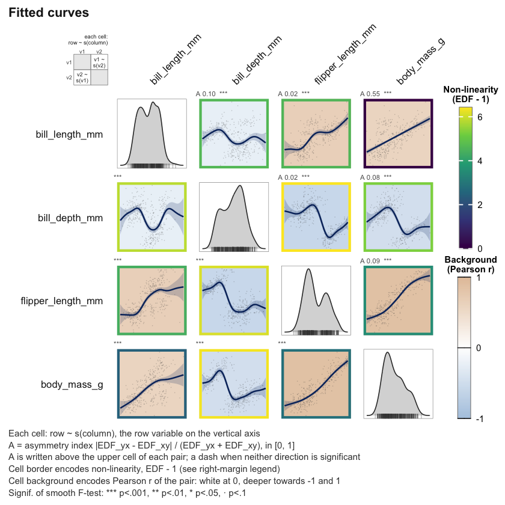
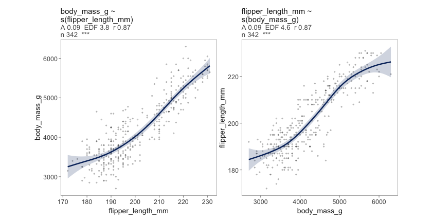
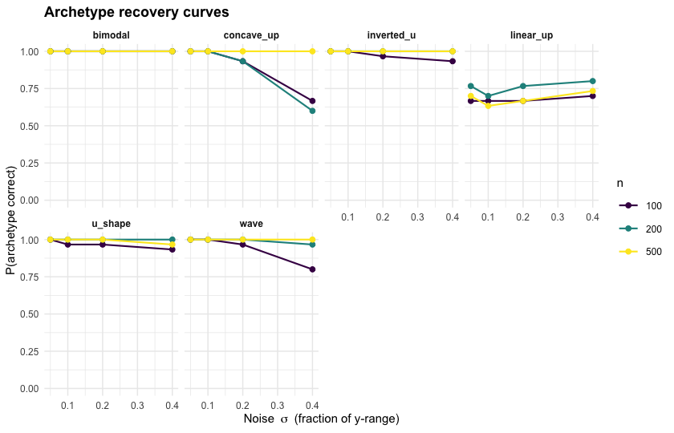

Asymmetric, GAM-based smoothed-association matrices: a directional y ~ s(x) / x ~ s(y) fit for every pair of continuous variables, so shape and direction survive where a Pearson correlation matrix collapses both away.
Asymmetric, GAM-based smoothed-association matrices for continuous variables. Each off-diagonal cell [r, c] shows the directional mgcv::gam() fit of the row variable on the column variable, so the two cells of a pair tell different stories whenever the relationship is asymmetric, which is where a scalar Pearson correlation loses information.
Two novelties, paired with the asymmetry story:
-
Asymmetry index
A = |EDF_yx − EDF_xy| / (EDF_yx + EDF_xy) ∈ [0, 1]— a single-number summary of the directional disparity per pair. It varies a good deal from sample to sample, sojanusplot_reference()gives the size it reaches by chance for a pair. -
27-category shape taxonomy — each fitted smooth is classified into one of 27 named shapes (
linear_up,skewed_peak,bimodal,bi_wave,rippled_monotone, …) via a(T, I)dispatch on turning-point and inflection counts, with monotonicity/convexity indices for disambiguation. The taxonomy rolls up through three broader tiers:archetype(7),monotonic(3),linear(2) — grounded in shape-constrained regression (Pya & Wood 2015), dose-response pharmacology (Calabrese 2008), and Morse critical- point classification (Milnor 1963).
Related packages
- corrplot draws a correlation matrix and can reorder the variables to bring out patterns.
- GGally extends ggplot2 with a pairwise plot matrix, among other plots.
- XICOR computes Chatterjee’s xi correlation, an association measure that does not assume a linear relationship.
corrplot and XICOR give one number per pair, and a GGally plot matrix shows each pair’s data. janusplot fits a smooth in each direction for every pair, draws both fits in the matrix, and reports how much the two directions differ and what shape each curve takes.
Install
# released version from CRAN
install.packages("janusplot")
# development version, with the vignettes built, from r-universe
install.packages("janusplot",
repos = c("https://max578.r-universe.dev",
"https://cloud.r-project.org"))janusplot_direction() needs the suggested package kernR, which is not on CRAN: install.packages("kernR", repos = "https://max578.r-universe.dev").
Quick start
Fit once, then draw. The examples use the Palmer penguins data from the suggested package palmerpenguins (install.packages("palmerpenguins")). Any data frame with numeric columns works the same way, for example janusplot_fit(mtcars[, c("mpg", "hp", "wt", "qsec")]).
library(janusplot)
vars <- c("bill_length_mm", "bill_depth_mm", "flipper_length_mm",
"body_mass_g")
fit <- janusplot_fit(palmerpenguins::penguins, vars)
fit
#> janusplot fit: 4 variables (bill_length_mm, bill_depth_mm, flipper_length_mm, body_mass_g)
#> 6 pairs, 12 directed cells
#> engine = bam, method = fREML, adjust = none
#> no flags
#> Largest asymmetries:
#> bill_length_mm <-> body_mass_g A = 0.55 body_mass_g ~ bill_length_mm: EDF 3.4, p < 0.001, rippled_monotone | bill_length_mm ~ body_mass_g: EDF 1.0, p < 0.001, linear_up
#> bill_length_mm <-> bill_depth_mm A = 0.10 bill_depth_mm ~ bill_length_mm: EDF 6.8, p < 0.001, bimodal | bill_length_mm ~ bill_depth_mm: EDF 5.6, p < 0.001, bimodal
#> flipper_length_mm <-> body_mass_g A = 0.09 body_mass_g ~ flipper_length_mm: EDF 3.8, p < 0.001, s_shape | flipper_length_mm ~ body_mass_g: EDF 4.6, p < 0.001, s_shape
#> bill_depth_mm <-> body_mass_g A = 0.08 body_mass_g ~ bill_depth_mm: EDF 7.4, p < 0.001, warped_wave | bill_depth_mm ~ body_mass_g: EDF 6.3, p < 0.001, warped_wave
#> bill_depth_mm <-> flipper_length_mm A = 0.02 flipper_length_mm ~ bill_depth_mm: EDF 7.1, p < 0.001, warped_wave | bill_depth_mm ~ flipper_length_mm: EDF 7.4, p < 0.001, warped_wave
#> Use summary() for the per-cell table and plot() for the matrix.
plot(fit)
Each cell [r, c] shows row ~ s(column), with the key in the top-left corner. By default:
-
Border colour: the non-linearity of the smooth, EDF minus 1 (
colour_by =also takes"asymmetry","pearson","spearman","kendall","deviance_gap"or"none"). -
Background: the pair’s signed Pearson correlation, white at 0 (
background_by =takes"spearman","kendall"or"none"). A fit withadjustdraws no background, since its curves are adjusted and the correlation is marginal. -
Strip above each cell: the significance glyph of the smooth’s F-test and, in the upper triangle, the asymmetry index
Aof the pair, written once because it belongs to the pair. From thirteen variables the strip carries the glyph alone, andAis read fromsummary(). -
Appearance: every setting lives in
janusplot_style(), passed asstyle =.
Ask for the two-letter shape code and the legend of the 27 shape categories comes with it:
The two directions of one pair, side by side:
janusplot_pair(fit, x = "flipper_length_mm", y = "body_mass_g")
janusplot() fits and draws the matrix in one call: janusplot(palmerpenguins::penguins, vars).
Shape taxonomy — what gets classified
| Archetype (7) | Categories | Example |
|---|---|---|
monotone_linear |
linear_up linear_down
|
y = x |
monotone_curved |
convex_up concave_up convex_down concave_down s_shape rippled_monotone
|
tanh, sqrt, exp(−x)
|
unimodal |
inverted_u skewed_peak broad_peak rippled_peak and their reflections u_shape skewed_trough broad_trough rippled_trough
|
(x−.5)², sin(πx²), plateau |
wave |
wave warped_wave rippled_wave complex_wave
|
sin(2πx) family |
multimodal |
bimodal bimodal_ripple bi_wave bi_wave_ripple
|
two-peak mix, sin(4πx)
|
chaotic |
complex |
≥ 5 extrema / inflections |
degenerate |
flat indeterminate
|
constant / fit failure |
Full table (with 2-letter codes + monotonic / linear rollups + glyph + gloss) via janusplot_shape_hierarchy().
Sensitivity study — built-in
The classifier’s recovery behaviour is characterised across a full factorial of sample sizes × noise levels × ground-truth shapes:
# Precomputed 2160-fit demo sweep
plot(shape_sensitivity_demo, "recovery_curves")
plot(shape_sensitivity_demo, "confusion_archetype")
summary(shape_sensitivity_demo, level = "archetype")
# Run your own: the full grid in parallel
future::plan(future::multisession, workers = 4L)
res <- janusplot_shape_sensitivity(parallel = TRUE)
plot(res, "accuracy_grid")Four diagnostic plots ("confusion_fine", "confusion_archetype", "accuracy_grid", "recovery_curves") and summary() at the fine and archetype levels. Design, pre-registered hypotheses, and full walk-through in the shape-recognition-sensitivity vignette.
Key features
Fit once, view many:
janusplot_fit()fits every ordered pair once;print(),summary()(one row per directed cell) andplot()(the matrix) read the same object without refitting.janusplot_pair(): the two directions of one or more pairs side by side, or overlaid in one standardised panel (display = "both").-
janusplot_compare(): two fits of the same variables matched cell by cell, typically marginal against adjusted, with the cells whose shape changed marked:fit_adj <- janusplot_fit(palmerpenguins::penguins, vars, adjust = ~ species) plot(janusplot_compare(fit, fit_adj, labels = c("marginal", "species-adjusted")), group = "species") janusplot_direction(): the residual-independence (HSIC) test that licenses a directional reading of a pair, or abstains (needs the kernR package).Real GAM fits via
mgcv: EDF, F-test p-values with optionalp_adjust = "BH"or"holm"across the matrix, confidence bands, derivatives, random effects vias(g, bs = "re")inadjust =.Parallel dispatch via
future.applyfor large matrices and sensitivity sweeps.Deterministic: seed
2026Lpins the shipped demo; user sweeps acceptseed =.
Why asymmetric?
A Pearson correlation discards both the shape of an association and the direction information that a non-linear data-generating process leaves in its residuals. Under the additive-noise causal discovery setting (Hoyer et al. 2009; Peters et al. 2014) the forward regression y ~ s(x) and its inverse x ~ s(y) are generically asymmetric when the underlying DGP is non-linear, and that asymmetry identifies the causal direction under mild conditions. janusplot surfaces this asymmetry as a visual pre-discovery diagnostic — not a causal inference procedure. See the vignette and the accompanying paper for scope and explicit non-claims.
Documentation
- Reference + articles (pkgdown site)
-
vignette("janusplot")— quickstart + feature tour -
vignette("shape-recognition-sensitivity")— design, hypotheses, every diagnostic plot
Status
Version 1.0.0. API_STABILITY.md lists the exported functions and their lifecycle; NEWS.md lists the changes from 0.2.0. The testthat suite includes vdiffr visual-regression snapshots, and the test-coverage workflow above reports line coverage.
Contributing
Bug reports and suggestions are welcome through the GitHub issues. See CONTRIBUTING.md for how to propose a change.
Citation
citation("janusplot")License
MIT. See LICENSE.md for the full text.